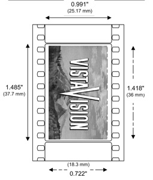

CinemaScope and Technirama
In the 1950’s, the advent of television caused a surge of new technologies aimed at distinguishing the cinema experience as unique and exclusive. On his blisteringly comprehensive website devoted to the history of widescreen cinema, Martin Hart debunks the notion that this was the only factor that led to the growth of these technologies:

Filming Technologies
More bark for your bite

1. Martin Hart, “Introduction to the history of widescreen cinema,” Widescreen Museum, http://www.widescreenmuseum.com/widescreen/intro.htm (accessed February 25, 2007)
2. Martin Hart, “The Cinerama Wing,” Widescreen Museum,
http://www.widescreenmuseum.com/Widescreen/wingcr1.htm (accessed February 25, 2007)
3. Martin Hart, “The CinemaScope Wing I,” Widescreen Museum,
http://www.widescreenmuseum.com/widescreen/wingcs1.htm (accessed February 25, 2007)
4. Christopher Finch, interview by Mason Funk, June 16, 2005, interview 67A, transcript, Channel Road Films for Buena Vista Home Entertainment.
5. Martin Hart, “The VistaVision Wing,” Widescreen Museum,
http://www.widescreenmuseum.com/widescreen/wingvv1.htm (accessed February 25, 2007)
6. Unknown author, “Technirama Process Debuts In Italy" International Projectionist (May 1957), Reprinted by the Widescreen Museum, courtesy of David Johnson, “The Technirama Wing - Page 1”
http://www.widescreenmuseum.com/widescreen/wingtr1.htm (accessed February 25, 2007

Walt Disney did not intend to miss this opportunity to enhance the theater-going experience for his animated films. After the success of Bambi and Cinderella, which revived the studio’s slumping profit margins after the war, they were not going to take the chance of falling by the wayside again.
Due to its ability to place characters anywhere in the screen, animation’s potential to take advantage of widescreen formats was great. Disney used the technology with success for the first CinemaScope animated short Toot Whistle Plunk Boom.
Disney’s next major animated feature was Sleeping Beauty, which raised the stakes even higher in terms of widescreen technologies. In the relatively few years since CinemaScope, several other formats had emerged including VistaVision and Technirama. VistaVision, employed by Paramount as an alternative to CinemaScope, used a spherical lens that did not squeeze the image as CinemaScope had.5 VistaVision was horizontally filmed and projected, so the image had eight perforations along the top and bottom of the image (as opposed to the sides):
As a result of the success of this film, Walt instructed the animators who were working on Lady and Tramp, who for a year had been creating creating cels and backgrounds for a standard aspect ratio film (1.37:1), to begin reformatting all the shooting elements for CinemaScope (2.55:1). Historian Christopher Finch has talked about the important job of the layout artists on the film:
The premiere of the film This is Cinerama at the Broadway Theater in New York on December 31, 1932 caused producers to immediately begin clamoring for bigger and better wide formats.2
CinemaScope was the first major widescreen format to hit the ground running after audiences were wowed by Cinerama. Fox won the bid for the hypergonar lens invented in the 1920’s by a French inventor and professor named Henri Chrétien. The lens squeezed the image into a form half its size, which was corrected during the projection process when the image was “unsqueezed” to its full size.3
“the systems that were developed supposedly to fight the threat of television actually dated back two decades when television was a term found only in science fiction movies. The studio heads and their technical staffs strived for ever better photographic and sound production and exhibition methods. Wide screens, large format film, and multichannel sound came to fruition in the 1950's but the seed had been planted decades before by the studio autocrats.”1
“When animators were dealing with traditional aspect ratio screens ... that were just a little bit wider than they were tall, the way they tended to work was to fill the screen with the characters and to have many cuts. The story was told in a series of very short takes, that the scenes rarely run more than a few seconds. This quickly became apparent that that wasn't going to work in Cinemascope, which was going to have to have a more leisurely pace ... [they had] to find a way to activate the entire screen ... you might be concentrated on the characters on the left side of the screen, who might be say Lady and Tramp. But you would be subliminally conscious that something was going on on the right side of the screen. The unsung heroes of Lady And The Tramp were the layout men and women. If you look at the credits of the film, there's quite a large layout team.”4

(above) A comparison of the full screen/flat version of a scene from Lady and the Tramp with the same shot from the final CinemaScope version. The character of Jock was not even visible in the flat version.
Photo © Disney
Photo © Disney
(left) A diagram of the anamorphic lens invented by Henri Chretien.
Photo courtesy of the Widescreen Museum website
(left) A poster for Toot Whistle Plunk Boom, the first animated CinemaScope film.
(below) A still from the film shows how the animators positioned the characters to take advantage of the format.
Photos © Disney

In an effort to “reduce negative grain and provide perfect definition both horizontally and vertically without distortion,”6 Technicolor modified the squeeze adapters used in the projection process for CinemaScope and created a new adapter (the “Delrama 1.5x”) that were fitted onto refurbished three-strip cameras no longer in use. The resulting format, called Technirama, used the same aspect ratio (2.35:1) as CinemaScope but had the same aperture and horizontal printing and projection processes as VistaVision. At 70mm, the image size of a Technirama frame was twice that a standard 35mm frame, and the image expansion on the projected prints was only 1.5 (hence the “Delrama 1.5x” adapter name) instead of VistaVision’s 2x expansion. Technirama could also be printed in standard vertical 35mm print format for theaters that were not equipped with the right equipment, making it a rather versatile medium.
In the mid-1950’s, limited theatrical releases called “roadshows” were used to showcase some of these “exclusive” technologies. Films were shown only once or twice per day in certain cities, and audiences had to reserve their tickets in advance. Walt Disney jumped on the roadshow bandwagon when Technirama was again improved (although only slightly), this time with the format Super Technirama 70. Sleeping Beauty enjoys the distinction of being not only the first animated feature shot in Technirama, but the first film shot in Super Technirama, with six track magnetic stereophonic sound. The main difference between Technirama and Super Technirama was the aspect ratio, which was slightly larger at 2.21:1 instead of 2.35:1.
(left) Poster for Sleeping Beauty advertising the Technirama format
Photo © Disney
One of the most stunning effects of the use of this format in the film is the juxtaposition of the verticality of the animation -- both backgrounds and characters were based on the rather vertical medieval tapestry styles of the Greek and Roman period -- with the super-wide 70mm format. Thus, Walt again effectively combined the subject matter and visuals inherent in the film he was creating with the technologies available at the time.
(above and below) Stills from Sleeping Beauty - notice how the verticality works against the wide image.
Photos © Disney